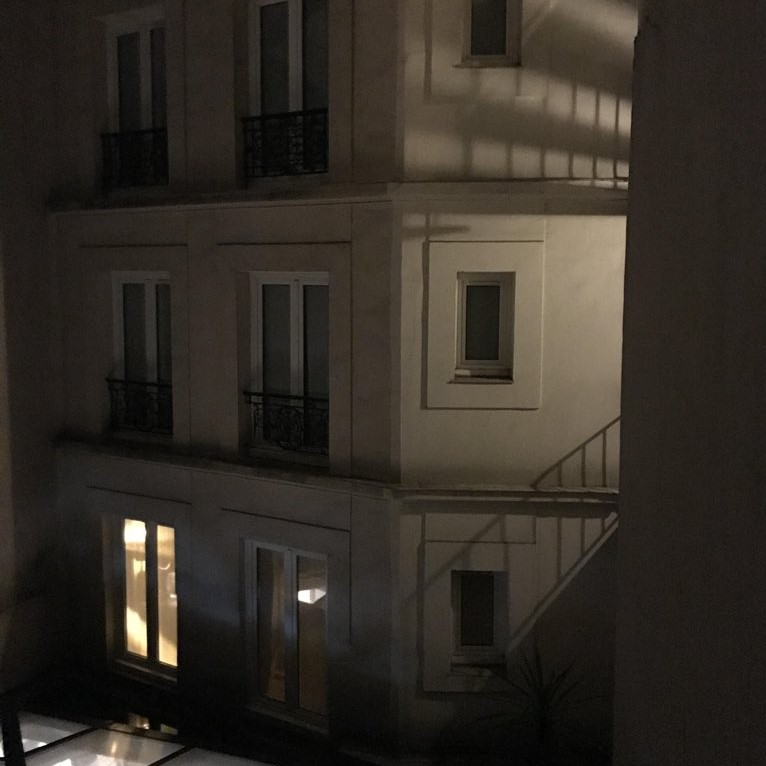
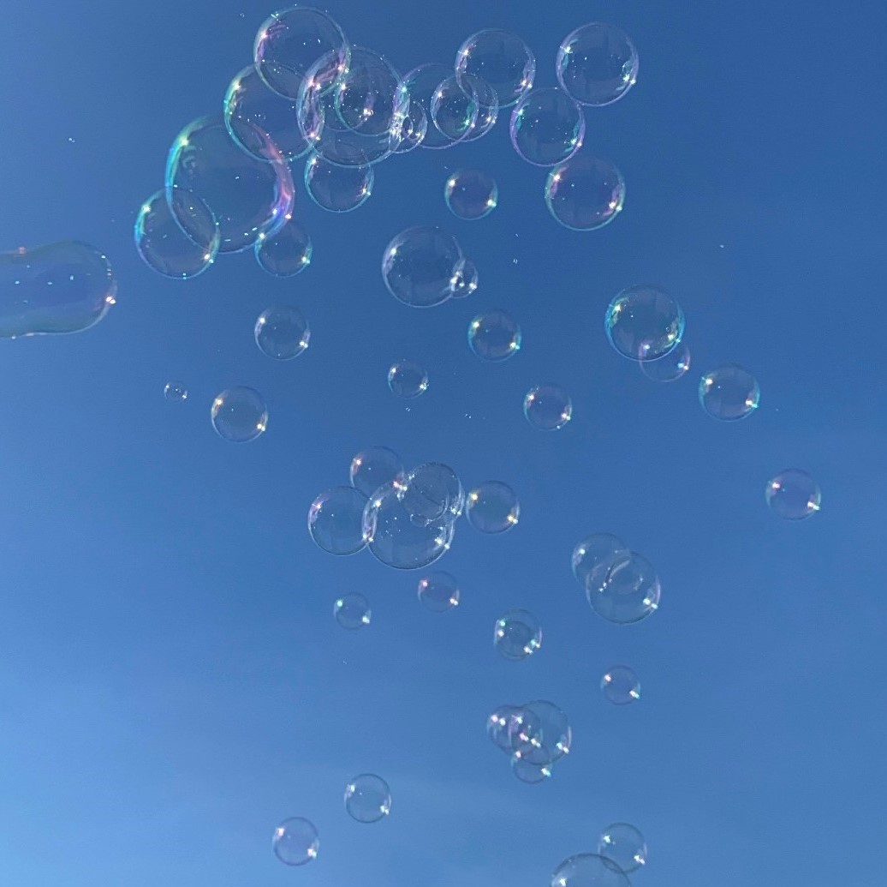
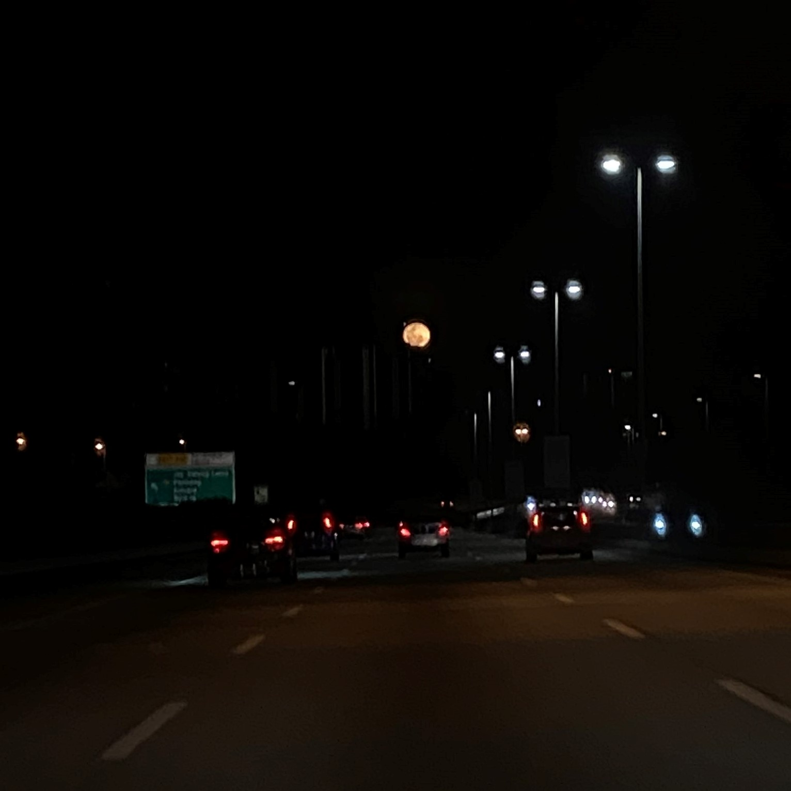
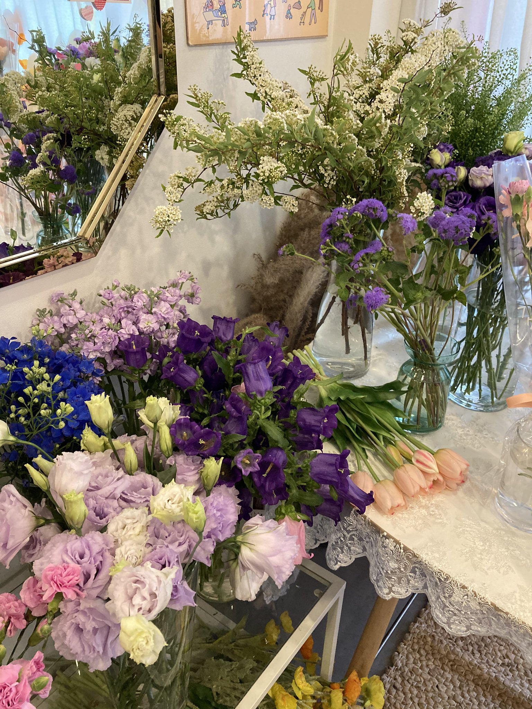
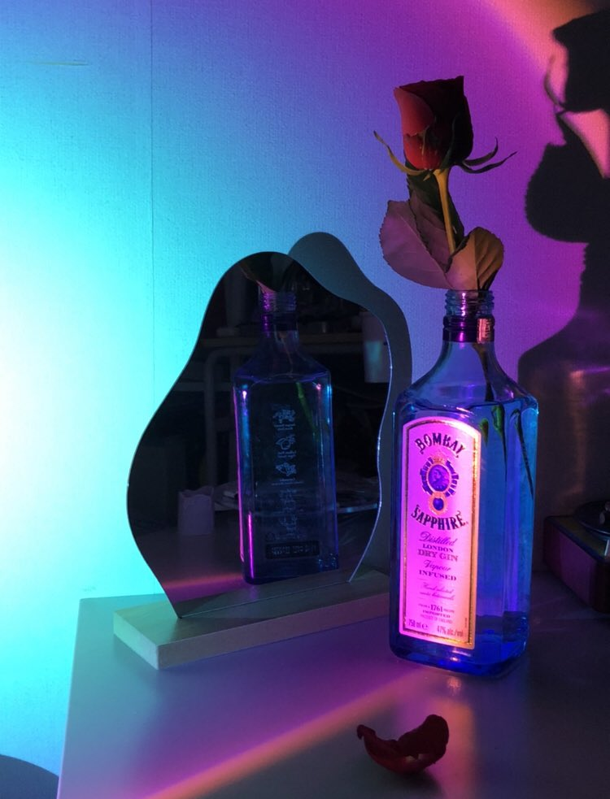
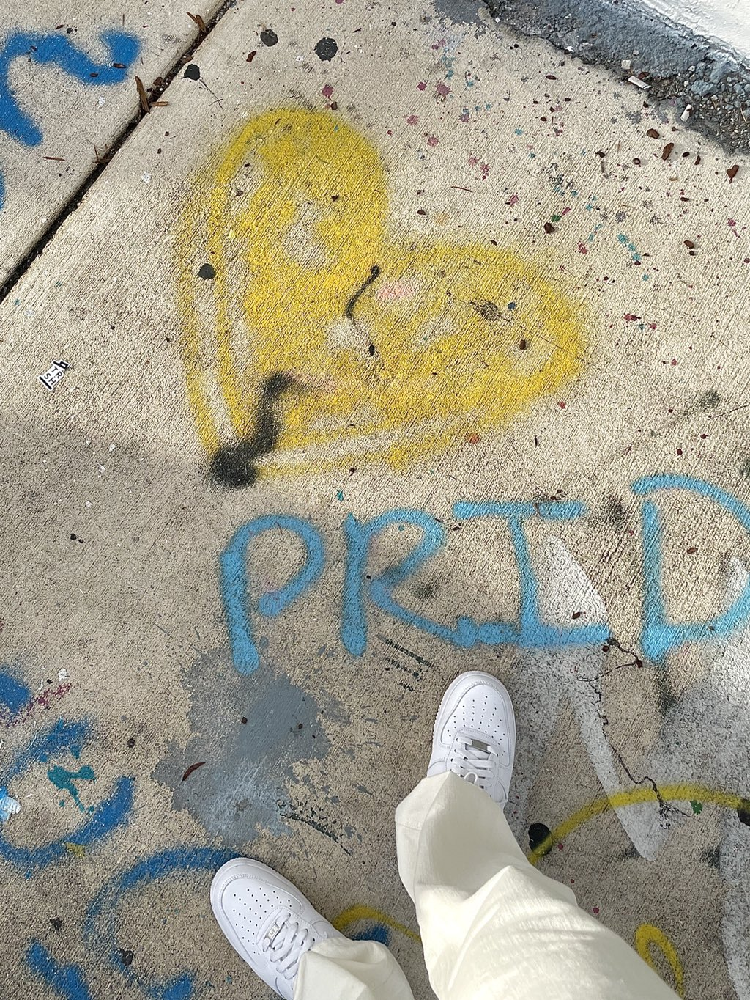

Experience / Photography
I learned about photography from my uncle, and I learned to take pictures and videos from him when I was 14. I always practice my photography skills by taking pictures of the clouds, sunsets, buildings, my cat, food, unique items that I accidentally found while traveling, and anything aesthetically pleasing to me.
I enjoy taking pictures and sharing them on social media. Sometimes I will be a personal photographer for my sister when she needs my help with her work, and I will do it for free. However, I will also accept any payment from my sister's team if they are satisfied with my work.
My hobby of photography can be a side income for me when I'm on my semester break, which is a good investment hobby that my mom approved of as I love to explore new hobbies.
  
  